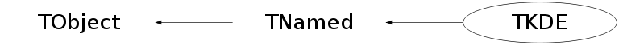

class TKDE: public TNamed
Function Members (Methods)
public:
| TKDE(UInt_t events = 0, const Double_t* data = 0, Double_t xMin = 0.0, Double_t xMax = 0.0, Option_t* option = "KernelType:Gaussian;Iteration:Adaptive;Mirror:noMirror;Binning:RelaxedBinning", Double_t rho = 1.0) | |
| virtual | ~TKDE() |
| void | TObject::AbstractMethod(const char* method) const |
| virtual void | TObject::AppendPad(Option_t* option = "") |
| virtual void | TObject::Browse(TBrowser* b) |
| static TClass* | Class() |
| virtual const char* | TObject::ClassName() const |
| virtual void | TNamed::Clear(Option_t* option = "") |
| virtual TObject* | TNamed::Clone(const char* newname = "") const |
| virtual Int_t | TNamed::Compare(const TObject* obj) const |
| virtual void | TNamed::Copy(TObject& named) const |
| virtual void | TObject::Delete(Option_t* option = "")MENU |
| virtual Int_t | TObject::DistancetoPrimitive(Int_t px, Int_t py) |
| virtual void | Draw(Option_t* option = "") |
| virtual void | TObject::DrawClass() constMENU |
| virtual TObject* | TObject::DrawClone(Option_t* option = "") constMENU |
| virtual void | TObject::Dump() constMENU |
| virtual void | TObject::Error(const char* method, const char* msgfmt) const |
| virtual void | TObject::Execute(const char* method, const char* params, Int_t* error = 0) |
| virtual void | TObject::Execute(TMethod* method, TObjArray* params, Int_t* error = 0) |
| virtual void | TObject::ExecuteEvent(Int_t event, Int_t px, Int_t py) |
| virtual void | TObject::Fatal(const char* method, const char* msgfmt) const |
| void | Fill(Double_t data) |
| virtual void | TNamed::FillBuffer(char*& buffer) |
| virtual TObject* | TObject::FindObject(const char* name) const |
| virtual TObject* | TObject::FindObject(const TObject* obj) const |
| const Double_t* | GetAdaptiveWeights() const |
| TF1* | GetApproximateBias(UInt_t npx = 100, Double_t xMin = 1.0, Double_t xMax = 0.0) |
| Double_t | GetBias(Double_t x) const |
| TF1* | GetDrawnFunction() |
| TGraphErrors* | GetDrawnGraph() |
| TF1* | GetDrawnLowerFunction() |
| TF1* | GetDrawnUpperFunction() |
| virtual Option_t* | TObject::GetDrawOption() const |
| static Long_t | TObject::GetDtorOnly() |
| Double_t | GetError(Double_t x) const |
| Double_t | GetFixedWeight() const |
| TF1* | GetFunction(UInt_t npx = 100, Double_t xMin = 1.0, Double_t xMax = 0.0) |
| TGraphErrors* | GetGraphWithErrors(UInt_t npx = 100, Double_t xMin = 1.0, Double_t xMax = 0.0) |
| virtual const char* | TObject::GetIconName() const |
| TF1* | GetLowerFunction(Double_t confidenceLevel = 0.95, UInt_t npx = 100, Double_t xMin = 1.0, Double_t xMax = 0.0) |
| Double_t | GetMean() const |
| virtual const char* | TNamed::GetName() const |
| virtual char* | TObject::GetObjectInfo(Int_t px, Int_t py) const |
| static Bool_t | TObject::GetObjectStat() |
| virtual Option_t* | TObject::GetOption() const |
| Double_t | GetRAMISE() const |
| Double_t | GetSigma() const |
| virtual const char* | TNamed::GetTitle() const |
| virtual UInt_t | TObject::GetUniqueID() const |
| TF1* | GetUpperFunction(Double_t confidenceLevel = 0.95, UInt_t npx = 100, Double_t xMin = 1.0, Double_t xMax = 0.0) |
| Double_t | GetValue(Double_t x) const |
| virtual Bool_t | TObject::HandleTimer(TTimer* timer) |
| virtual ULong_t | TNamed::Hash() const |
| virtual void | TObject::Info(const char* method, const char* msgfmt) const |
| virtual Bool_t | TObject::InheritsFrom(const char* classname) const |
| virtual Bool_t | TObject::InheritsFrom(const TClass* cl) const |
| virtual void | TObject::Inspect() constMENU |
| void | TObject::InvertBit(UInt_t f) |
| virtual TClass* | IsA() const |
| virtual Bool_t | TObject::IsEqual(const TObject* obj) const |
| virtual Bool_t | TObject::IsFolder() const |
| Bool_t | TObject::IsOnHeap() const |
| virtual Bool_t | TNamed::IsSortable() const |
| Bool_t | TObject::IsZombie() const |
| virtual void | TNamed::ls(Option_t* option = "") const |
| void | TObject::MayNotUse(const char* method) const |
| virtual Bool_t | TObject::Notify() |
| void | TObject::Obsolete(const char* method, const char* asOfVers, const char* removedFromVers) const |
| static void | TObject::operator delete(void* ptr) |
| static void | TObject::operator delete(void* ptr, void* vp) |
| static void | TObject::operator delete[](void* ptr) |
| static void | TObject::operator delete[](void* ptr, void* vp) |
| void* | TObject::operator new(size_t sz) |
| void* | TObject::operator new(size_t sz, void* vp) |
| void* | TObject::operator new[](size_t sz) |
| void* | TObject::operator new[](size_t sz, void* vp) |
| Double_t | operator()(Double_t x) const |
| Double_t | operator()(const Double_t* x, const Double_t* p = 0) const |
| virtual void | TObject::Paint(Option_t* option = "") |
| virtual void | TObject::Pop() |
| virtual void | TNamed::Print(Option_t* option = "") const |
| virtual Int_t | TObject::Read(const char* name) |
| virtual void | TObject::RecursiveRemove(TObject* obj) |
| void | TObject::ResetBit(UInt_t f) |
| virtual void | TObject::SaveAs(const char* filename = "", Option_t* option = "") constMENU |
| virtual void | TObject::SavePrimitive(ostream& out, Option_t* option = "") |
| void | SetBinning(TKDE::EBinning) |
| void | TObject::SetBit(UInt_t f) |
| void | TObject::SetBit(UInt_t f, Bool_t set) |
| virtual void | TObject::SetDrawOption(Option_t* option = "")MENU |
| static void | TObject::SetDtorOnly(void* obj) |
| void | SetIteration(TKDE::EIteration iter) |
| void | SetKernelType(TKDE::EKernelType kern) |
| void | SetMirror(TKDE::EMirror mir) |
| virtual void | TNamed::SetName(const char* name)MENU |
| virtual void | TNamed::SetNameTitle(const char* name, const char* title) |
| void | SetNBins(UInt_t nbins) |
| static void | TObject::SetObjectStat(Bool_t stat) |
| void | SetRange(Double_t xMin, Double_t xMax) |
| virtual void | TNamed::SetTitle(const char* title = "")MENU |
| void | SetTuneFactor(Double_t rho) |
| virtual void | TObject::SetUniqueID(UInt_t uid) |
| void | SetUseBinsNEvents(UInt_t nEvents) |
| virtual void | ShowMembers(TMemberInspector& insp) |
| virtual Int_t | TNamed::Sizeof() const |
| virtual void | Streamer(TBuffer& b) |
| void | StreamerNVirtual(TBuffer& b) |
| virtual void | TObject::SysError(const char* method, const char* msgfmt) const |
| Bool_t | TObject::TestBit(UInt_t f) const |
| Int_t | TObject::TestBits(UInt_t f) const |
| virtual void | TObject::UseCurrentStyle() |
| virtual void | TObject::Warning(const char* method, const char* msgfmt) const |
| virtual Int_t | TObject::Write(const char* name = 0, Int_t option = 0, Int_t bufsize = 0) |
| virtual Int_t | TObject::Write(const char* name = 0, Int_t option = 0, Int_t bufsize = 0) const |
protected:
| virtual void | TObject::DoError(int level, const char* location, const char* fmt, va_list va) const |
| void | TObject::MakeZombie() |
private:
Data Members
public:
| enum EKernelType { | kGaussian | |
| kEpanechnikov | ||
| kBiweight | ||
| kCosineArch | ||
| kUserDefined | ||
| kTotalKernels | ||
| }; | ||
| enum EIteration { | kAdaptive | |
| kFixed | ||
| }; | ||
| enum EMirror { | kNoMirror | |
| kMirrorLeft | ||
| kMirrorRight | ||
| kMirrorBoth | ||
| kMirrorAsymLeft | ||
| kMirrorAsymLeftRight | ||
| kMirrorAsymRight | ||
| kMirrorLeftAsymRight | ||
| kMirrorAsymBoth | ||
| }; | ||
| enum EBinning { | kUnbinned | |
| kRelaxedBinning | ||
| kForcedBinning | ||
| }; | ||
| enum TObject::EStatusBits { | kCanDelete | |
| kMustCleanup | ||
| kObjInCanvas | ||
| kIsReferenced | ||
| kHasUUID | ||
| kCannotPick | ||
| kNoContextMenu | ||
| kInvalidObject | ||
| }; | ||
| enum TObject::[unnamed] { | kIsOnHeap | |
| kNotDeleted | ||
| kZombie | ||
| kBitMask | ||
| kSingleKey | ||
| kOverwrite | ||
| kWriteDelete | ||
| }; |
protected:
| TString | TNamed::fName | object identifier |
| TString | TNamed::fTitle | object title |
private:
| Double_t | fAdaptiveBandwidthFactor | Geometric mean of the kernel density estimation from the data for adaptive iteration |
| TF1* | fApproximateBias | Output Kernel Density Estimation approximate bias |
| Bool_t | fAsymLeft | |
| Bool_t | fAsymRight | |
| vector<UInt_t> | fBinCount | Number of events per bin for binned data option |
| TKDE::EBinning | fBinning | |
| vector<Double_t> | fCanonicalBandwidths | |
| vector<Double_t> | fData | Data events |
| vector<Double_t> | fEvents | Original data storage |
| TGraphErrors* | fGraph | Graph with the errors |
| TKDE::EIteration | fIteration | |
| TKDE::TKernel* | fKernel | |
| ROOT::Math::IBaseFunctionOneDim* | fKernelFunction | |
| vector<Double_t> | fKernelSigmas2 | |
| TKDE::EKernelType | fKernelType | |
| TF1* | fLowerPDF | Output Kernel Density Estimation lower confidence interval PDF function |
| Double_t | fMean | Data mean |
| TKDE::EMirror | fMirror | |
| Bool_t | fMirrorLeft | |
| Bool_t | fMirrorRight | |
| UInt_t | fNBins | Number of bins for binned data option |
| UInt_t | fNEvents | Data's number of events |
| Bool_t | fNewData | flag to control when new data are given |
| TF1* | fPDF | Output Kernel Density Estimation PDF function |
| Double_t | fRho | Adjustment factor for sigma |
| vector<Bool_t> | fSettedOptions | User input options flag |
| Double_t | fSigma | Data std deviation |
| Double_t | fSigmaRob | Data std deviation (robust estimation) |
| TF1* | fUpperPDF | Output Kernel Density Estimation upper confidence interval PDF function |
| Bool_t | fUseBins | |
| UInt_t | fUseBinsNEvents | If the algorithm is allowed to use binning this is the minimum number of events to do so |
| Bool_t | fUseMinMaxFromData | flag top control if min and max must be used from data |
| Bool_t | fUseMirroring | |
| Double_t | fWeightSize | Caches the weight size |
| Double_t | fXMax | Data maximum value |
| Double_t | fXMin | Data minimum value |
Class Charts
{kind=link}
{kind=link}
{kind=link}
{kind=link}

Function documentation
TKDE(UInt_t events = 0, const Double_t* data = 0, Double_t xMin = 0.0, Double_t xMax = 0.0, Option_t* option = "KernelType:Gaussian;Iteration:Adaptive;Mirror:noMirror;Binning:RelaxedBinning", Double_t rho = 1.0)
Class constructor
void Instantiate(TKDE::KernelFunction_Ptr kernfunc, UInt_t events, const Double_t* data, Double_t xMin, Double_t xMax, Option_t* option, Double_t rho)
Template's constructor surrogate
void SetDrawOptions(Option_t* option, TString& plotOpt, TString& drawOpt)
Sets User defined drawing options
void SetUseBinsNEvents(UInt_t nEvents)
Sets User option for the minimum number of events for allowing automatic binning
void SetTuneFactor(Double_t rho)
Factor which can be used to tune the smoothing. It is used as multiplicative factor for the fixed and adaptive bandwidth. A value < 1 will reproduce better the tails but oversmooth the peak while a factor > 1 will overestimate the tail
void SetData(const Double_t* data)
Sets the data events input sample or bin centres for binned option and computes basic estimators
void InitFromNewData()
re-initialize when new data have been filled in TKDE re-compute kernel quantities and mean and sigma
TF1* GetFunction(UInt_t npx = 100, Double_t xMin = 1.0, Double_t xMax = 0.0)
TF1* GetUpperFunction(Double_t confidenceLevel = 0.95, UInt_t npx = 100, Double_t xMin = 1.0, Double_t xMax = 0.0)
Returns the PDF upper estimate (upper confidence interval limit)
TF1* GetLowerFunction(Double_t confidenceLevel = 0.95, UInt_t npx = 100, Double_t xMin = 1.0, Double_t xMax = 0.0)
Returns the PDF lower estimate (lower confidence interval limit)
TF1* GetApproximateBias(UInt_t npx = 100, Double_t xMin = 1.0, Double_t xMax = 0.0)
Returns the PDF estimate bias
Double_t operator()(const Double_t* x, const Double_t* p = 0) const
The class's unary function: returns the kernel density estimate
Double_t operator()(Double_t x) const
The class's unary function: returns the kernel density estimate
Double_t GetRAMISE() const
Returns the Root Asymptotic Mean Integrated Squared Error according to Silverman's rule of thumb with assumed Gaussian density
void SetBinCentreData(Double_t xmin, Double_t xmax)
Returns the bins' centres from the data for using with the binned option
void Draw(Option_t* option = "")
Draws either the KDE functions or its errors
Possible options:
"" (default) - draw just the kde
"same" draw on top of existing pad
"Errors" draw a TGraphErrors with the point and errors
"confidenceinterval" draw KDE + conf interval functions (default is 95%)
"confidenceinterval@0.90" draw KDE + conf interval functions at 90%
Extra options can be passed in opt for drawing the TF1 or the TGraph
NOTE: The functions GetDrawnFunction(), GetDrawnUpperFunction(), GetDrawnLowerFunction()
and GetGraphWithErrors() return the corresponding drawn objects (which are maneged by the TKDE)
They can be used to changes style, color, etc...
TGraphErrors* GetGraphWithErrors(UInt_t npx = 100, Double_t xMin = 1.0, Double_t xMax = 0.0)
void DrawConfidenceInterval(TString& drawOpt, double cl = 0.95)
Draws the KDE and its confidence interval
Double_t UpperConfidenceInterval(const Double_t* x, const Double_t* p) const
Returns the pointwise upper estimated density
Double_t LowerConfidenceInterval(const Double_t* x, const Double_t* p) const
Returns the pointwise lower estimated density
void CheckKernelValidity()
Checks if kernel has unit integral, mu = 0 and positive finite sigma conditions
TF1* GetKDEFunction(UInt_t npx = 100, Double_t xMin = 1.0, Double_t xMax = 0.0)
Returns the estimated density
TF1* GetPDFUpperConfidenceInterval(Double_t confidenceLevel = 0.95, UInt_t npx = 100, Double_t xMin = 1.0, Double_t xMax = 0.0)
Returns the upper estimated density
TF1* GetPDFLowerConfidenceInterval(Double_t confidenceLevel = 0.95, UInt_t npx = 100, Double_t xMin = 1.0, Double_t xMax = 0.0)
Returns the upper estimated density
TF1* GetKDEApproximateBias(UInt_t npx = 100, Double_t xMin = 1.0, Double_t xMax = 0.0)
Returns the approximate bias
explicit TKDE(UInt_t events = 0, const Double_t* data = 0, Double_t xMin = 0.0, Double_t xMax = 0.0, Option_t* option = "KernelType:Gaussian;Iteration:Adaptive;Mirror:noMirror;Binning:RelaxedBinning", Double_t rho = 1.0)
TF1 * GetDrawnFunction()
get the drawn object to chanage settings These objects are managed by TKDE and should not be deleted by the user
{ return fPDF;}Double_t EpanechnikovKernel(Double_t x) const
void SetHistogram()